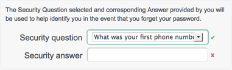

- 4.1. Overview of the Default User Interface
- 4.2. Configuring the Default User Interface
- 4.3. Managing User Accounts With the User Interface
- 4.4. Managing Workflows From the User Interface
- 4.5. Changing the UI Theme
- 4.6. Using an External System for Password Reset
- 4.7. Providing a Logout URL to External Applications
- 4.8. Changing the UI Path
- 4.9. Disabling the UI
OpenIDM provides a customizable, browser-based user interface. The default user interface enables administrative users to create, modify and delete user accounts. It provides role-based access to tasks based on BPMN2 workflows, and allows users to manage certain aspects of their own accounts, including configurable self-service registration.
The default user interface is provided as a reference implementation that demonstrates the capabilities of the REST API. You can modify certain aspects of the default user interface according to the requirements of your deployment.
To access the user interface, install and start OpenIDM, then point your browser to https://localhost:8443/openidmui. If you have not installed a certificate that is trusted by a certificate authority, you are prompted with an "Untrusted Connection" warning the first time you log in to the UI.
Log in as the default administrative user (Login: openidm-admin, Password: openidm-admin) or as an existing user in the repository. The display differs, depending on the role of the user that has logged in.
For an administrative user (role openidm-admin), two tabs
are displayed - Dashboard and Users. The Dashboard tab lists any tasks
assigned to the user who has logged in, processes available to be invoked,
and any notifications for that user.
The following image shows the Dashboard tab for the administrative user when no tasks, processes, or notifications are available.
 |
The Users tab is only available to administrative users and provides an
interface to manage user entries (OpenIDM managed objects under
managed/user).
The following image shows the Users tab after with the two sample users created after a reconciliation process from Sample 2b.
 |
You can sort the list of users alphabetically, by any of the column values. Click on the column title to sort.
The Profile link enables the user to modify his username
or password. The Change Security Data link, accessed from
the top of the screen, or from the user's Profile page enables the user to
change his password and, if this functionality has been enabled, to select a
new security question.
Password changes are subject to the default password policy, as shown in the following password update screen.
 |
For a regular user (role openidm-authorized), the Users
tab is not displayed. By default, regular users cannot manage user accounts,
except for certain aspects of their own accounts.
The following sections outline the configurable aspects of the default user interface.
Self-registration (the ability for new users to create their own accounts)
is disabled by default. To enable self-registration, set
"selfRegistration" to true in the UI
configuration file (conf/ui-configuration.json).
{
"configuration" : {
"selfRegistration" : true,
...
When self-registration is enabled, a "Register your account" link is provided on the login page. When a user creates an account on the account registration page, a managed object is created in the OpenIDM repository. The default policies for managed objects are applied during account creation.
 |
User objects created using self-registration automatically have the role
openidm-authorized.
In the event that a user forgets his password, a password reset function enables registered users to reset their own passwords. To guard against unauthorized access, you can specify that users be prompted with one or more security questions when they request a password reset.
Security questions are disabled by default. To enable them, set
"securityQuestions" to true in the UI
configuration file (conf/ui-configuration.json).
{
"configuration" : {
"securityQuestions" : true,
...
A default set of questions is provided, but you can add to these, or
overwrite them. Specify the list of questions to be asked in the
conf/ui-secquestions.json file.
Refresh your browser after this configuration change for the change to be picked up by the UI.
When security questions are enabled, the following panel is included on the self registration page.
|  |
In addition, a "Reset your password" link is provided on the login page. When a user attempts to reset her password, she is prompted for the response to the security question that she set up during registration.
 |
Note
If security questions are enabled after a specific user has registered, that particular user will be unable to use the password reset functionality.
The password, passphrase, and security answer are all associated with
some minimum length. To change that minimum, edit the
conf/policy.json file.
Navigate to the appropriate section. Set the minLength
option to the desired number.
For example, the following excerpt from the
conf/policy.json file shows a default
minLength of 16 associated with the security answer.
{
"policyId" : "minimum-length",
"params" : {
"minLength" : 16
}
},To ensure that users are entering their details onto the correct site, you can enable site identification. Site identification provides a preventative measure against phishing.
With site identification enabled, a user is presented with a range of images from which he can select when he registers his account, and prompted to specify his own site phrase. The selected site image and phrase are displayed on login, to confirm that the user is logging in to the legitimate site.
To enable site identification, set "siteIdentification"
to true in the UI configuration file
(conf/ui-configuration.json).
{
"configuration" : {
"siteIdentification" : true,
...
Refresh your browser after this configuration change for the change to be picked up by the UI.
When site identification is enabled, the following panel is included on the self registration page.
 |
A default list of four images is presented for site identification. The
images are defined in the siteImages property in the
conf/ui-configuration.json file:
"siteImages" : [ "images/passphrase/mail.png", "images/passphrase/user.png", "images/passphrase/report.png", "images/passphrase/twitter.png" ], ...
You can change the default images, and include additional images, by
placing image files in the ui/extension/images folder
and modifying the siteImages property in the
ui-configuration.json file to point to the new images.
Refresh your browser for the change to take effect.
The following example assumes an image file named
my-new-image.jpg, located in
ui/extension/images.
"siteImages" : [ "images/passphrase/mail.png", "images/passphrase/user.png", "images/passphrase/report.png", "images/passphrase/twitter.png", "images/my-new-image.jpg" ], ...
Note that the default image files are located in
ui/default/enduser/public/images/passphrase.
The default user profile includes the ability to select the user's country
and state or province. To specify the countries, and the associated states
or provinces, that appear in these drop down lists, edit the
conf/ui-countries.json file. For example, to add
Norway to the list of countries, you would add the following to the
conf/ui-countries.json file:
{
"key" : "norway",
"value" : "Norway",
"states" : [
{
"key" : "akershus",
"value" : "Akershus"
},
{
"key" : "aust-agder",
"value" : "Aust-Agder"
},
{
"key" : "buskerud",
"value" : "Buskerud"
},
...
Refresh your browser after this configuration change for the change to be picked up by the UI.
Only administrative users (with the role openidm-admin)
can add, modify, and delete user accounts. Regular users can modify certain
aspects of their own accounts.
Log into the user interface as an administrative user.
Select the Users tab.
Click Add User.
Complete the fields on the Create new account page.
Most of these fields are self-explanatory. Be aware that the user interface is subject to policy validation, as described in Using Policies to Validate Data. So, for example, the Email address must be of valid email address format, and the Password must comply with the password validation settings that are indicated in the panel to the right.
The Admin Role field reflects the roles that are defined in the
ui-configuration.jsonfile, as well as any managed roles that have been added. By default, the roles are mapped as follows:"roles" : { "openidm-admin" : "Administrator", "openidm-authorized" : "User", "openidm-tasks-manager" : "Tasks Manager" },A user can be assigned more than one role. Only users with the
tasks-managerrole can assign tasks to any candidate user for that task.
 |
Log into the user interface as an administrative user.
Select the Users tab.
Click the Username of the user that you want to update.
On the user's profile page, modify the fields you want to change and click Update.
The user account is updated in the OpenIDM repository.
Follow steps 1-3 in Procedure 4.2, “To Update a User Account”.
On the user's profile page, select Inactive from the Account status list.
Click Update.
The user account is deactivated and the user can no longer log in to the system.
Inactive users are indicated with a X icon in the Status column of the Users page. The following image shows that Steven Carter's account has been deactivated.
 |
Users can change their own passwords by following the Change Security Data link in their profiles. This process requires that users know their existing passwords.
In a situation where a user forgets his password, an administrator can reset the password of that user without knowing the user's existing password.
Follow steps 1-3 in Procedure 4.2, “To Update a User Account”.
On the user's profile page, click Change password.
Enter a new password that conforms to the password policy and click Update.
The user password is updated in the repository.
The UI is integrated with the embedded Activiti worfklow engine, enabling
users to interact with workflows. Available workflows are displayed under the
Processes item on the Dashboard. In order for a workflow to be displayed
here, the workflow definition file must be present in the
openidm/workflow directory.
A sample workflow integration with the user interface is provided in
openidm/samples/workflow, and documented in Sample Workflow -
Provisioning User Accounts. Follow the steps in that
sample for an understanding of how the workflow integration works.
Access to workflows is based on OpenIDM roles, and is configured in the file
conf/process-access.json. By default all users with the
role openidm-authorized or
openidm-admin can invoke any available workflow. The
default process-access.json file is as follows:
{
"workflowAccess" : [
{
"propertiesCheck" : {
"property" : "_id",
"matches" : ".*",
"requiresRole" : "openidm-authorized"
}
},
{
"propertiesCheck" : {
"property" : "_id",
"matches" : ".*",
"requiresRole" : "openidm-admin"
}
}
]
}
"property"Specifies the property used to identify the process definition. By default, process definitions are identified by their
_id."matches"A regular expression match is performed on the process definitions, according to the specified property. The default (
"matches" : ".*") implies that all process definition IDs match."requiresRole"Specifies the OpenIDM role that is required for users to have access to the matched process definition IDs. In the default file, users with the role
openidm-authorizedoropenidm-adminhave access.
To extend the process action definition file, identify the processes to which
users should have access, and specify the qualifying user roles. For example,
if you wanted to restrict access to a process definition whose ID was
567, to users with the role ldap you
would add the following to the process-access.json file:
{
"propertiesCheck" : {
"property" : "_id",
"matches" : "567",
"requiresRole" : "ldap"
}
}
You can customize the theme of the default user interface to apply your own
branding. The easiest way to adjust the UI theme, is to edit the properties
in the UI theme configuration file
(/path/to/openidm/conf/ui-themeconfig.json). This file
stores detailed color values, background image paths, and a number of other
common styling options. Because the UI theme configuration file is part of
the configuration store, it is shared by all nodes in a cluster. Changes made
to this file do not have to be replicated manually across nodes.
To change theme elements that are not included in the UI theme configuration
file, you can create a custom theme in the
openidm/ui/extension directory. By default the user
interface reads the stylesheets and images from the
openidm/ui/default directory. Do not modify the files in
this default directory as there is no guarantee that your changes will not be
overwritten in the next OpenIDM release. Modifications made in the
openidm/ui/extension directory can be maintained across
product upgrades. The UI searches the extension directory
first and applies any styles or images located in this directory. Note that
files added to the extension directory must be manually
copied between every node in a cluster.
If you want to update the view logic of the UI, you cannot simply add files to the extensions folder. It is assumed that if your deployment requires that level of control of the user interface, you are no longer going to want to be automatically upgraded with subsequent releases. As such, you need to take on the task of maintaining a fork of the UI.
Most changes to the UI stylesheets can be made in the UI theme configuration
file (conf/ui-themeconfig.json).
With the following modification made to that file, the background color of the UI is changed to dark grey.
$ grep "background-color" /path/to/openidm/conf/ui-themeconfig.json "background-color" : "#ababab",
Refresh your browser window for the change to appear.
The default stylesheets are located in the
openidm/ui/default/enduser/public/css directory. To
customize the stylesheets beyond the properties available in the UI theme
configuration file, copy the default stylesheets to
openidm/ui/extension/css, and edit them according to
your requirements.
The default logo is located in the
openidm/ui/default/enduser/public/images directory.
Any file named logo.png, added to the directory
openidm/ui/extension/images, will replace the default
logo when the browser is refreshed.
To specify a different file name, or to control the size, and other
properties of the image file that is used for the logo, adjust the
logo property in the UI theme configuration file
(conf/themeconfig.json).
The following change to the UI theme configuration file points to an image
file named example-logo.png, in the
openidm/ui/extension/images directory.
...
"logo" : {
"src" : "images/example-logo.png",
"title" : "Example.com",
"alt" : "Example.com",
"height" : "80",
"width" : "120"
},
...Refresh your browser window for the new logo to appear.
Currently, the UI is provided only in US English. You can translate the UI and specify that your own locale is used. The following example shows how to translate the UI into French.
Copy the default locale to a new folder in the same location (
openidm/ui/default/enduser/public/locales):$ cd /path/to/openidm/ui/default/enduser/public/locales $ cp -R en/ fr/
The new locale (
fr) now contains the defaulttranslation.jsonfile.$ ls fr/ translation.json
Translate the values of the properties in the
fr/translate.jsonfile. Do not translate the property names. For example:... "UserMessages" : { "changedPassword" : "Mot de passe a été modifié", "profileUpdateFailed" : "Problème lors de la mise à jour du profil", "profileUpdateSuccessful" : "Profil a été mis à jour", "userNameUpdated" : "Nom d'utilisateur a été modifié", ....Change the UI configuration to use the new locale by setting the value of the
langproperty in the/path/to/openidm/conf/ui-configuration.jsonfile, as follows:"lang" : "fr",
Refresh your browser window for the modification to be applied.
You can create specific UI themes for different projects and then point a particular UI instance to use a defined theme on startup. To create a complete custom theme, follow these steps:
Shut down the OpenIDM instance, if it is running. In the Felix administration console, type:
shutdown ->
Clear the
felix-cachedirectory.$ rm -rf felix-cache
Copy the entire default UI theme to an accessible location. For example:
$ cd /path/to/openidm/ui $ cp -r default ../new-project-theme
In the copied theme, modify the required elements, as described in the previous sections. Note that nothing is copied to the extension folder in this case - changes are made in the copied theme.
In the
openidm/conf/boot/boot.propertiesfile, add the following line, specifying the location of the new theme. The path is relative to the installation root of the OpenIDM instance.openidm.ui.fileinstall.dir=new-project-theme
Restart OpenIDM.
$ cd /path/to/openidm $ ./startup.sh
Relaunch the UI in your browser. The UI is displayed with the new custom theme.
By default, the password reset mechanism is handled internally, in OpenIDM. You can reroute password reset in the event that a user has forgotten his password, by specifying an external URL to which password reset requests are sent. Note that this URL applies to the password reset link on the login page only, not to the security data change facility that is available after a user has logged in.
To set an external URL to handle password reset, set the
passwordResetLink parameter in the UI configuration file
(conf/ui-configuration.json) file. The following example
sets the passwordResetLink to
https://accounts.example.com/account/reset-password.
passwordResetLink: "https://accounts.example.com/reset-password"
The passwordResetLink parameter takes either an empty
string as a value (which indicates that no external link is used) or a full
URL to the external system that handles password reset requests.
Note
External password reset and security questions for internal password reset
are mutually exclusive. Therefore, if you set a value for the
passwordResetLink parameter, users will not be prompted
with any security questions, regardless of the setting of the
securityQuestions parameter.
By default, a UI session is invalidated when a user clicks on the Log out link. In certain situations your external applications might require a distinct logout URL to which users can be routed, to terminate their UI session.
The logout URL is #logout, appended to the UI URL, for
example, https://localhost:8443/openidmui/index.html#logout/.
The logout URL effectively performs the same action as clicking on the Log out link of the UI.
By default, the UI is registered at a specific URL
(context-root/openidmuiopenidm/conf/ui.context-enduser.json file, setting the
urlContextRoot property to the new URL. For example, to
change the path to
context-root/exampleui
"urlContextRoot" : "/exampleui",